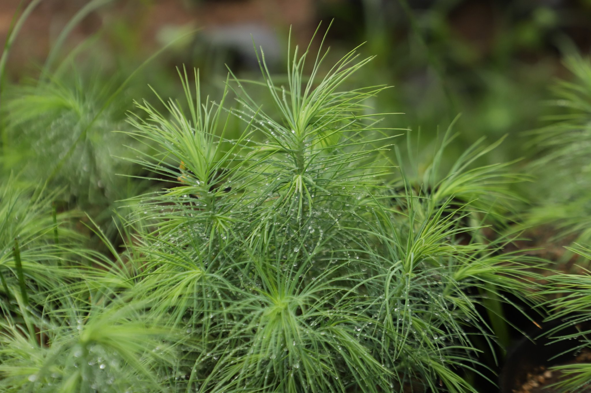

📇
基础名片
Basic Info
华盖木
学名：Pinus squamata
科属：松科松属
保护级别：极危（CR）、国家一级保护植物
学名：Pinus squamata
科属：松科松属
保护级别：极危（CR）、国家一级保护植物
🌿
形态特征
Morphology
形态特征
生活乔木；
茎：幼树灰绿色，幼时平滑，老树树皮暗褐色，成不规则薄片剥落，内皮暗白色；
枝：冬芽卵球形，红褐色，具树脂；一年生枝红褐色，密被黄褐及灰褐色柔毛，稀有长柔毛及腺体，二年生枝淡绿褐色，无毛；
叶：针叶5(4)针一束，长9-17厘米，径约0.8毫米，两面具气孔线，边缘有细齿，树脂道3-5，边生，叶鞘早落；
果：成熟球果圆锥状卵圆形，长约9厘米；径约6厘米，果柄长1.5-2厘米；种鳞长圆状椭圆形，长约2.7厘米，宽约1.8厘米，熟时张开，鳞盾显著隆起，鳞脐背生，凹陷，无刺，横脊明显；种子长圆形或倒卵圆形，黑色，种翅长约1.6厘米，具黑色纵纹；
生活乔木；
茎：幼树灰绿色，幼时平滑，老树树皮暗褐色，成不规则薄片剥落，内皮暗白色；
枝：冬芽卵球形，红褐色，具树脂；一年生枝红褐色，密被黄褐及灰褐色柔毛，稀有长柔毛及腺体，二年生枝淡绿褐色，无毛；
叶：针叶5(4)针一束，长9-17厘米，径约0.8毫米，两面具气孔线，边缘有细齿，树脂道3-5，边生，叶鞘早落；
果：成熟球果圆锥状卵圆形，长约9厘米；径约6厘米，果柄长1.5-2厘米；种鳞长圆状椭圆形，长约2.7厘米，宽约1.8厘米，熟时张开，鳞盾显著隆起，鳞脐背生，凹陷，无刺，横脊明显；种子长圆形或倒卵圆形，黑色，种翅长约1.6厘米，具黑色纵纹；
🌱
生长环境
Habitat
生长环境
产地：云南省昭通市巧家县；
生境：30°以上的陡坡上；
土壤：黄红壤，土层厚度由浅薄至深厚层，pH值6-6.5
海拔：2000-2350m；
物候：花期4-5月，果期翌年9-10月；
产地：云南省昭通市巧家县；
生境：30°以上的陡坡上；
土壤：黄红壤，土层厚度由浅薄至深厚层，pH值6-6.5
海拔：2000-2350m；
物候：花期4-5月，果期翌年9-10月；
💊
价值作用
Value
价值作用
研究价值:
巧家五针松是松科松属的古老孑遗植物，是阐明松属系统演化非常有价值的物种。
研究价值:
巧家五针松是松科松属的古老孑遗植物，是阐明松属系统演化非常有价值的物种。

人工繁育/移植巧家五针松数量变化
野生巧家五针松种群数量变化